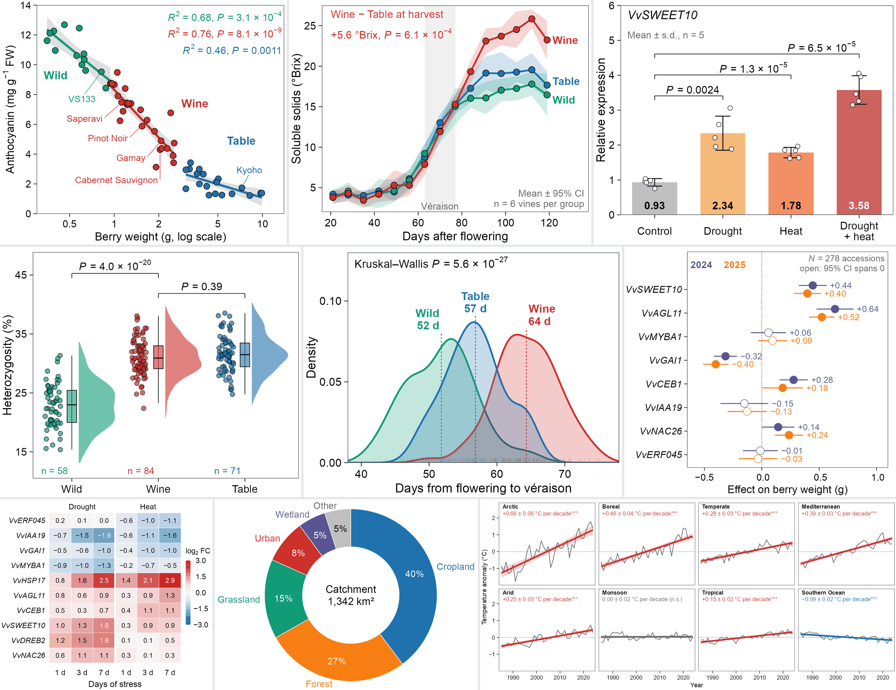
由九张示例图拼成，都用模拟数据在本仓库重画。
Made from the nine examples, all redrawn in this repository from simulated data.
示例 / Examples
点卡片打开画廊大图（含代码与数据）；卡片下方的 GitHub 链接打开该图的文件夹。
Click a card to open it in the gallery; the GitHub link below it opens the figure folder.
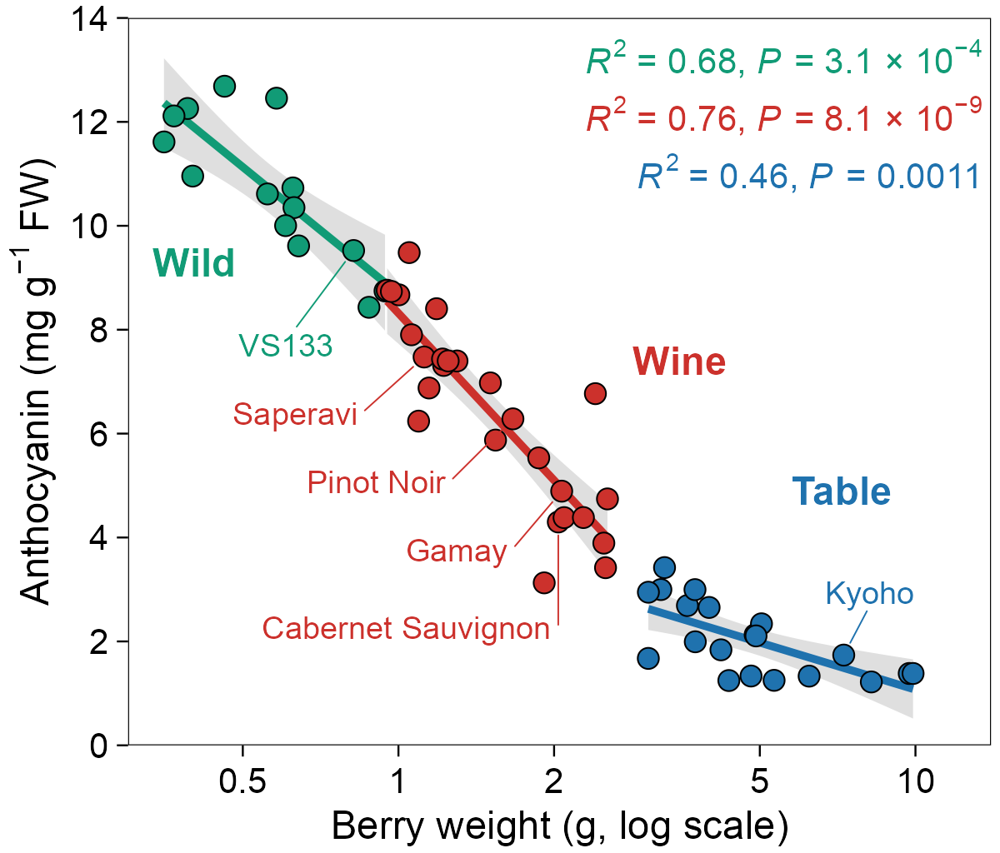
分组散点与回归（house 风格）Scatter with group fits (house style) correlation/house-scatter · GitHub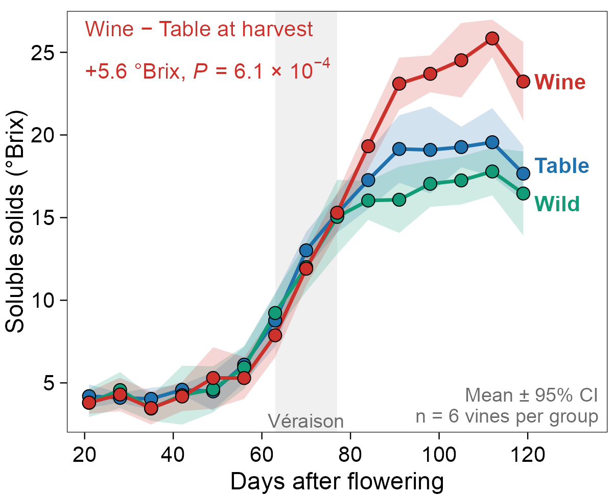
带置信带的折线图（house 风格）Line chart with CI ribbons (house style) correlation/house-line · GitHub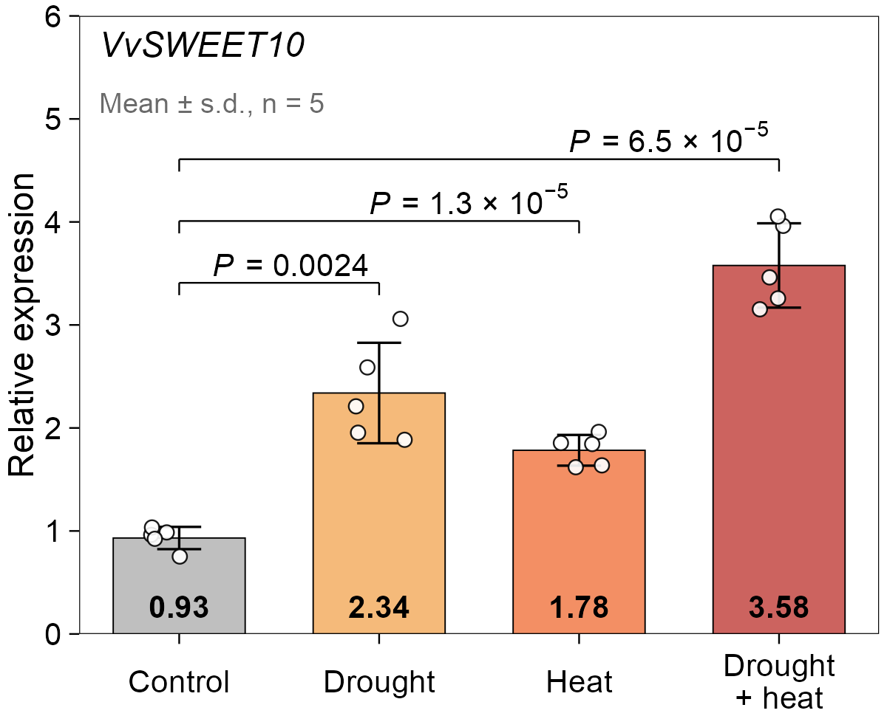
带原始点与 P 值的柱图（house 风格）Bar chart with points and P values (house style) comparison/house-bar · GitHub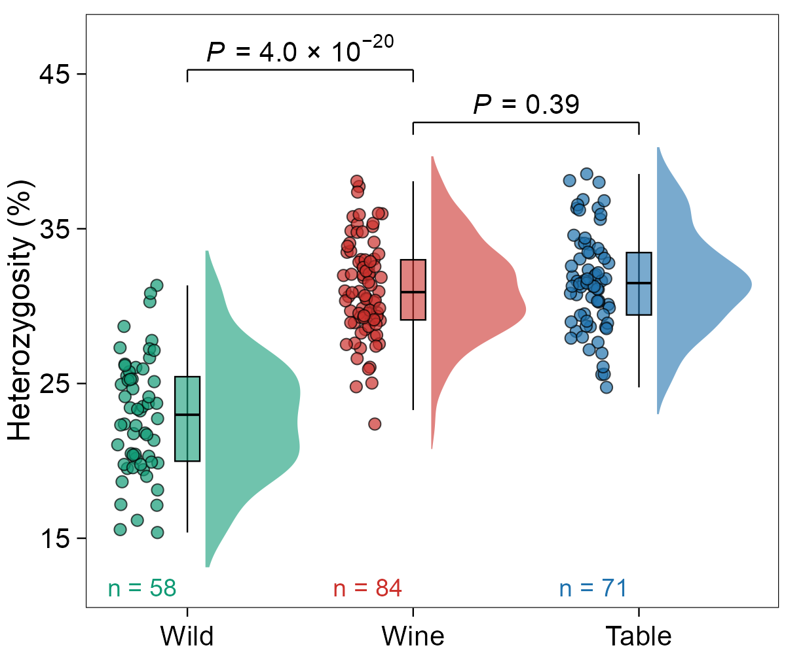
雨云图（house 风格）Raincloud plot (house style) distribution/house-raincloud · GitHub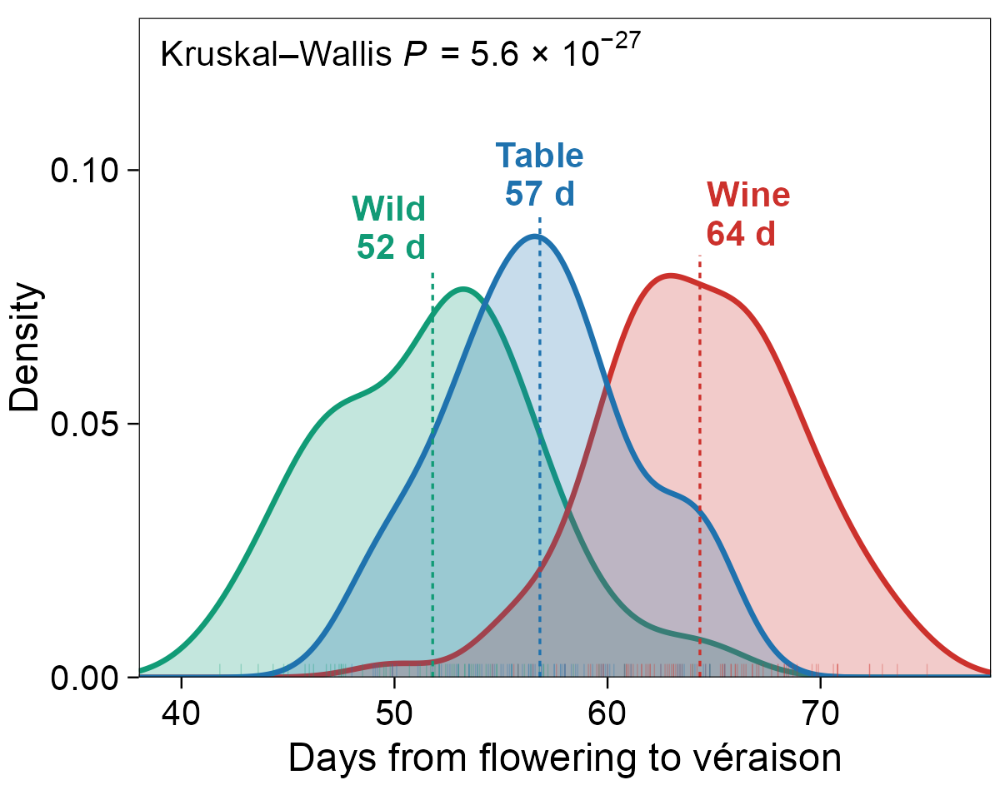
分组密度曲线与均值（house 风格）Density curves with group means (house style) distribution/house-density · GitHub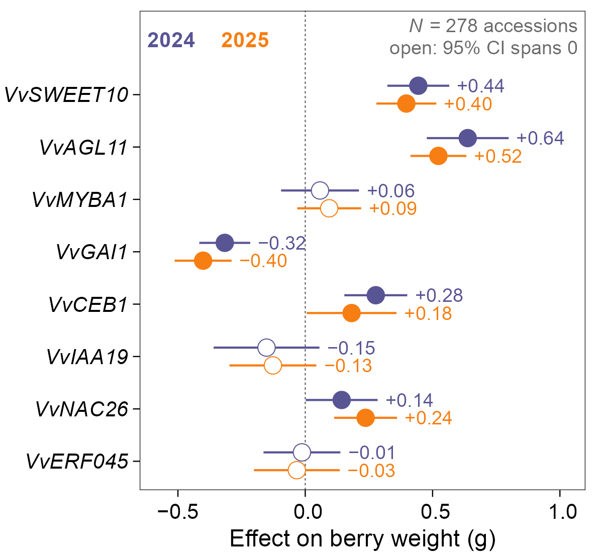
效应量森林图（house 风格）Forest plot of effects (house style) comparison/house-forest · GitHub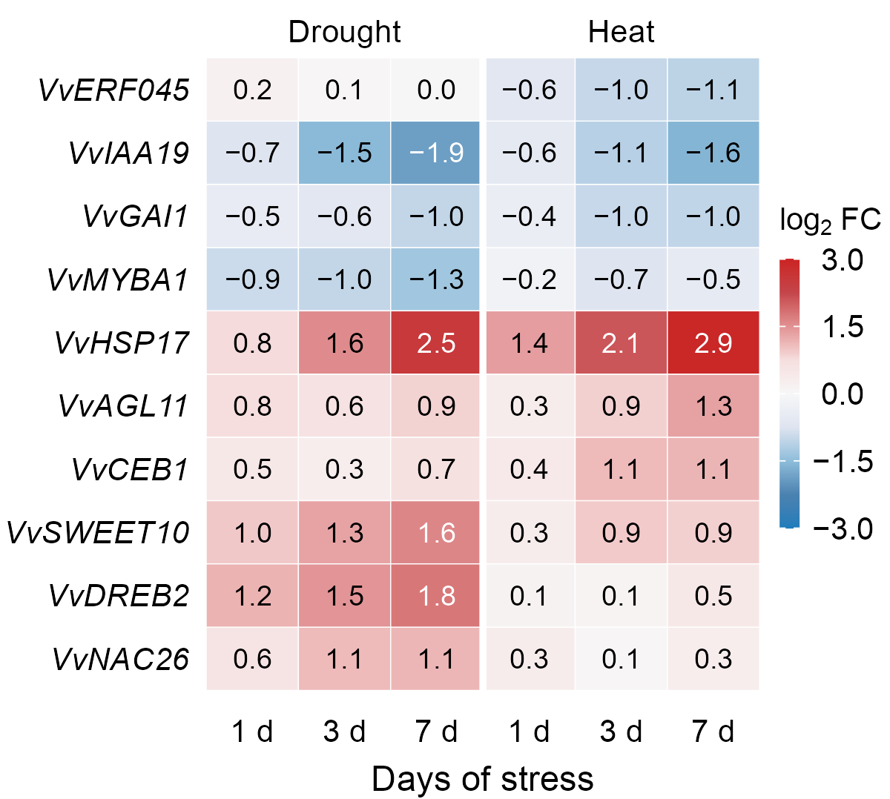
带数值的发散色热图（house 风格）Annotated diverging heatmap (house style) heatmap/house-heatmap · GitHub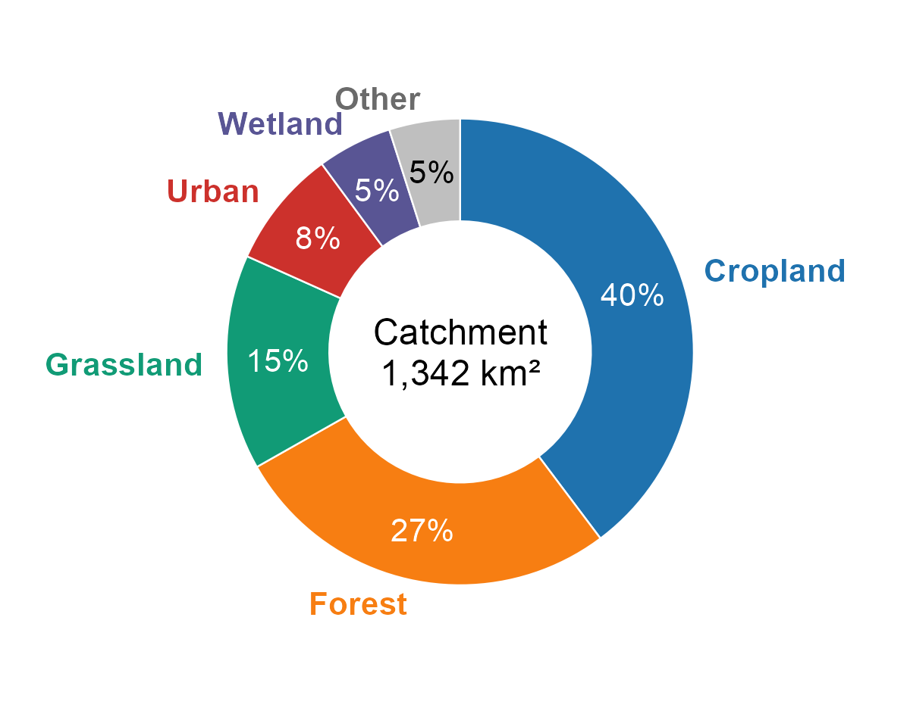
直标环图（house 风格）Donut chart with direct labels (house style) composition/house-donut · GitHub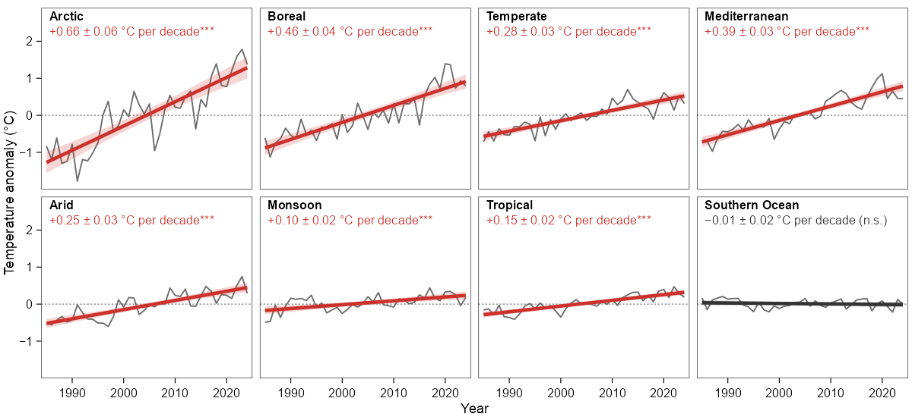
小多图与面板内趋势（house 风格）Small multiples with in-panel trends (house style) layout/house-small-multiples · GitHub用法 / Usage
source("../../../styles/r/theme_house.R")theme_house()+pv_palette("house")pv_save_house(p, "figure", width = "single" | "double")
中文：theme_house.R 会顺带加载 theme_viz.R。theme_house() 默认 7/8 pt；非用图例不可时用 theme_house(legend = "inside")，放框内右上。pv_save_house() 对单栏单面板自动 +2 pt（9/10 pt），bump = 0 关掉。pv_save_house() 会在输出目录写 <file>.pdf、<file>.png 和 preview.png，覆盖同目录里同名的 preview.png；试跑请在临时目录里进行。
English: theme_house.R also loads theme_viz.R. theme_house() defaults to 7/8 pt; when a legend is unavoidable, use theme_house(legend = "inside") to place it top-right inside the frame. pv_save_house() adds +2 pt (9/10 pt) to a single panel on 89 mm; bump = 0 switches this off. pv_save_house() writes <file>.pdf, <file>.png and preview.png to the output folder and overwrites any preview.png already there, so try it in a scratch folder.
# R: figures/<category>/<slug>/plot.R
source("../../../styles/r/theme_house.R")
library(ggplot2)
df <- data.frame(x = rep(1:10, 3),
y = c(1:10, 0.8 * (1:10) + 1, 0.5 * (1:10) + 2),
group = rep(c("a", "b", "c"), each = 10)) # or utils::read.csv("data.csv")
p <- ggplot(df, aes(x, y, colour = group)) +
geom_line(linewidth = pv_house_lw("main")) +
scale_colour_manual(values = unname(pv_palette("house", 3))) +
theme_house()
pv_save_house(p, "figure", width = "single", height_mm = 76)
# Python
import sys
from pathlib import Path
import numpy as np
sys.path.insert(0, str(Path(__file__).resolve().parents[3] / "styles" / "python"))
import house
house.apply_house_style()
x = np.arange(1, 11)
fig, ax = house.house_figure("single", height_mm=76)
ax.plot(x, 0.8 * x + 1, color=house.pv_palette("house")[0])
house.save_house(fig, "figure")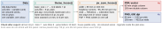
字号层级 / Type scale
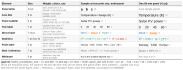
规范摘要（中文）
新加的图一律用 house style；已有的图不重渲染，继续用旧版 theme_viz()。完整规则以 styles/style-contract.md 为准。
| 字号（印刷尺寸） | 双栏 / 多面板：刻度 7 pt、轴标题 8 pt（7/8 pt）；面板字母 10 pt 粗体小写 a b c；任何文字 ≥6 pt。 单栏只放 1 个面板：全部 +2 pt，刻度 9 pt、轴标题 10 pt（9/10 pt）， pv_save_house() 自动加。字号不随面板缩小。 |
|---|---|
| 画布 | 单栏 89 mm（width = "single"），双栏 183 mm（width = "double"）。双栏每行 3 个面板（约 58 mm），单栏每行 2 个，面板间距水平约 3 mm、垂直约 2.5 mm，外边距 ≤1 mm。 |
| 轴标题 | 常规字重，不加粗；写变量名和单位，单位用括号，如「温度 (°C)」。 |
| 边框与刻度 | 四边 0.5 pt 黑框，刻度 0.5 pt、长 1 mm、向外；无网格，无次刻度（对数轴除外）。 |
| 线、点与置信带 | 主数据线 1.5 pt，强调 / 拟合线 2.0 pt，次要系列 0.8 pt，参考虚线 0.5 pt，误差棒 0.7 pt。点 shape 21 加黑描边（size = 2.3, stroke = 0.3）。置信带与线同色，透明度 0.2。 |
| 图例与统计量 | 默认不画图例，系列名直接写在图里，文字颜色 = 数据颜色；非用图例不可时放框内右上、无边框。统计量（R²、P、N）写在图内，与组同色。 |
| 字体 | Arial → Helvetica → Liberation Sans → DejaVu Sans；中文思源黑体 / Noto Sans CJK SC。全图一种字体。 |
| 导出 | Cairo PDF（文字保留为文本）+ 600 dpi PNG + 1200 px 宽 preview.png。 |
Style summary (English)
New figures use the house style. Existing figures are not re-rendered and keep the legacy theme_viz(). The full rules are in styles/style-contract.md.
| Text (print size) | Double column / multi-panel: 7 pt ticks, 8 pt axis titles (7/8 pt); 10 pt bold lowercase panel letters; nothing under 6 pt. One panel on 89 mm: everything +2 pt, 9 pt ticks and 10 pt axis titles (9/10 pt); pv_save_house() adds it. Text does not shrink with the panel. |
|---|---|
| Canvas | 89 mm single column (width = "single"), 183 mm double column (width = "double"). Three panels per row on 183 mm (about 58 mm each), two on 89 mm; gaps about 3 mm across and 2.5 mm down; outer margin ≤1 mm. |
| Axis titles | Plain weight, not bold; variable name, then the unit in parentheses, e.g. Temperature (°C). |
| Frame and ticks | Four-sided 0.5 pt black frame; ticks 0.5 pt, 1 mm, outward; no grid, no minor ticks (except log axes). |
| Lines, points, CI ribbons | Main lines 1.5 pt, emphasis / fit 2.0 pt, minor series 0.8 pt, dashed reference 0.5 pt, error bars 0.7 pt. Points: shape 21 with a black outline (size = 2.3, stroke = 0.3). CI ribbons in the line colour, alpha 0.2. |
| Legends and statistics | No legend by default: label series in the panel in the series colour. When one is unavoidable, place it top-right inside the frame, with no box. Statistics (R², P, N) go inside the panel in the group colour. |
| Font | Arial → Helvetica → Liberation Sans → DejaVu Sans; Chinese: Source Han Sans / Noto Sans CJK SC. One font per figure. |
| Export | Cairo PDF (text stays text) + 600 dpi PNG + 1200 px wide preview.png. |
版面与间距 / Layout
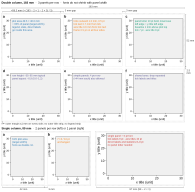
色板 / Palettes
| 名字 / Name | 中文用途 | Use | 色值 / Colours |
|---|---|---|---|
house | 分类，按序取，≤6 个彩色系列，其余用灰 | Categories, in order, ≤6 coloured series, the rest grey | #1F72AE#F77E12#119B76#CC312C#595594#62B4E7#E6C32A#A8127F#8A4C38 |
house_div | 蓝–红发散，0 居中 | Blue–red diverging, centred on 0 | #1D7CBB#4A82B0#8EBDDA#DEE4F0#F7F7F7#F6DEDE#E19193#C4454B#CB2223 |
ssp | 情景 | Scenarios | Historical #000000SSP1-2.6 #3A9CFESSP2-4.5 #F79423SSP3-7.0 #FD3B3BSSP5-8.5 #9C2125 |
house_warm | 暖色顺序 | Warm sequential | #FBD6A0#F5BA7A#F38F64#CC635F#965459 |
house_grey | 文字、参考线、置信带 | Text, reference lines, CI ribbons | #000000#333333#6B6B6B#757575#BFBFBF#E0E0E0#F0F0F0 |
参考 / References
只列链接与图号；参考图不进仓库。
Links and figure numbers only; no reference images are stored here.
26 条参考 / 26 references
| 来源 / Source | 图号 / Figure |
|---|---|
| One Earth 2024 | Fig. 1 |
| Sci. Adv. 2023 | Fig. 3 |
| Nat. Energy 2024 | Fig. 1 |
| Joule 2024 | Fig. 3 |
| Joule 2025 | Fig. 6 |
| PNAS 2026 | Fig. 2 |
| Nat. Clim. Change 2024 | Fig. 3 |
| Sci. Adv. 2025 | Fig. 3 |
| Nat. Sustain. 2025 | Fig. 3 |
| PNAS 2024 | Fig. 3 |
| One Earth 2025 | Fig. 2 |
| Nat. Energy 2026 | Fig. 3 |
| Nat. Commun. 2023 | Fig. 2 |
| Nat. Commun. 2025 | Fig. 5 |
| Nat. Commun. 2026 | Fig. 6 |
| Nat. Commun. 2026 | Fig. 5 |
| Nat. Commun. 2026 | Fig. 5 |
| Nat. Commun. 2024 | Fig. 5c |
| Nat. Commun. 2024 | Fig. 1a |
| Nat. Commun. 2025 | Fig. 1a, Fig. 5a |
| One Earth 2023 | Fig. 1B |
| Nat. Commun. 2024 | Fig. 4c |
| One Earth 2023 | Fig. 1 |
| Bizard | gallery page |
| Bizard | gallery page |
| R Graph Gallery | gallery page |